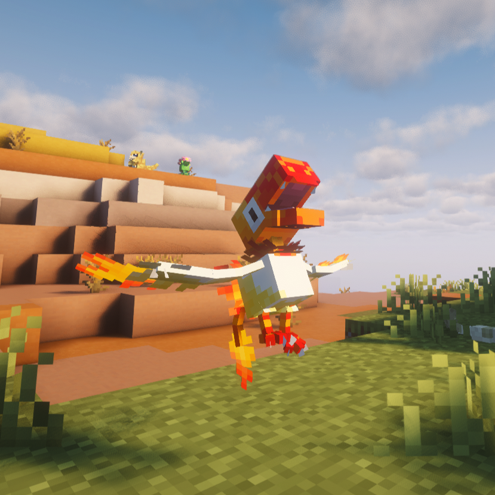
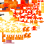

Infernal Form
Infernal Archen
FireRock
BST 567

In-game screenshot
Base Stats
HP75
Attack140
Defense65
Sp. Atk112
Sp. Def65
Speed110
Ability
Rekindle
The first time this Pokémon falls to half HP or less, its Attack and Speed rise. The first time it falls to one-quarter HP or less, it restores one-quarter of its maximum HP.
Signature Move
Last Ember
| Type | Category | Power | Accuracy | PP |
|---|---|---|---|---|
| Fire | Physical | 75 / 100 / 130 | 100% | 10 |
Power is 75 above half HP, 100 at half HP or less, and 130 at one-quarter HP or less.
Level-Up Learnset
| Level | Move |
|---|---|
| 1 | Leer |
| 1 | Quick Attack |
| 1 | Rock Throw |
| 1 | Ember |
| 8 | Wing Attack |
| 12 | Rock Tomb |
| 16 | Flame Charge |
| 22 | Acrobatics |
| 28 | Fire Fang |
| 34 | Rock Slide |
| 40 | Last Ember |
| 46 | Crunch |
| 52 | Dual Wingbeat |
| 58 | Flare Blitz |
| 64 | Stone Edge |
| 72 | Brave Bird |
| 80 | Head Smash |
Additional Learnset
Other Learnset Categories
No additional Egg, TM, Tutor, or Legacy move entries are defined for this form in pack 1.10.
Natural Spawn
Rarity: Ultra Rare
Weight: 0.2
Level: 35-60
Context: Grounded
Biomes: Badlands, Thermal
Sky light: 8–15
Can see sky: Yes
Textures

Normal texture sheetShiny texture sheet